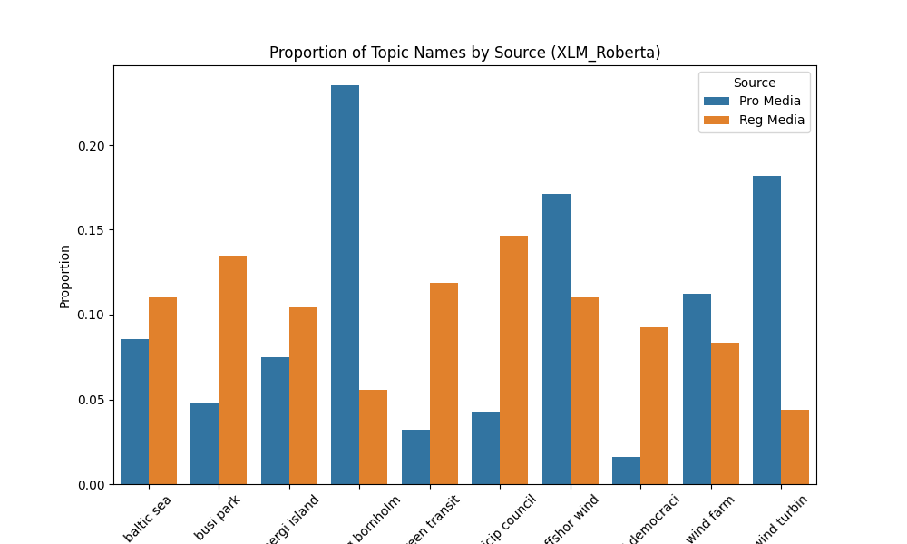
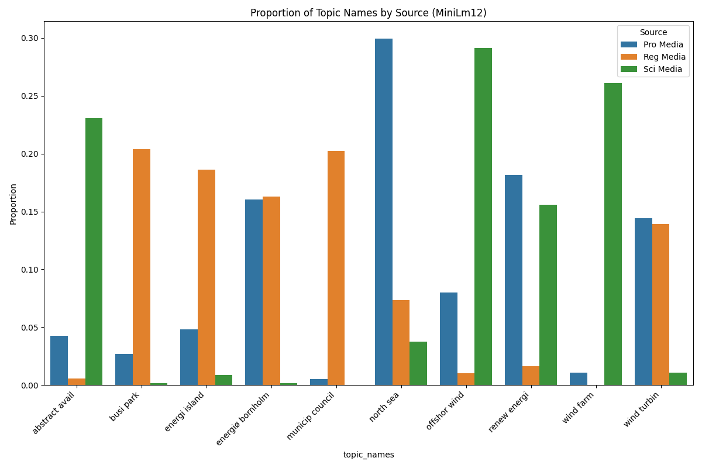
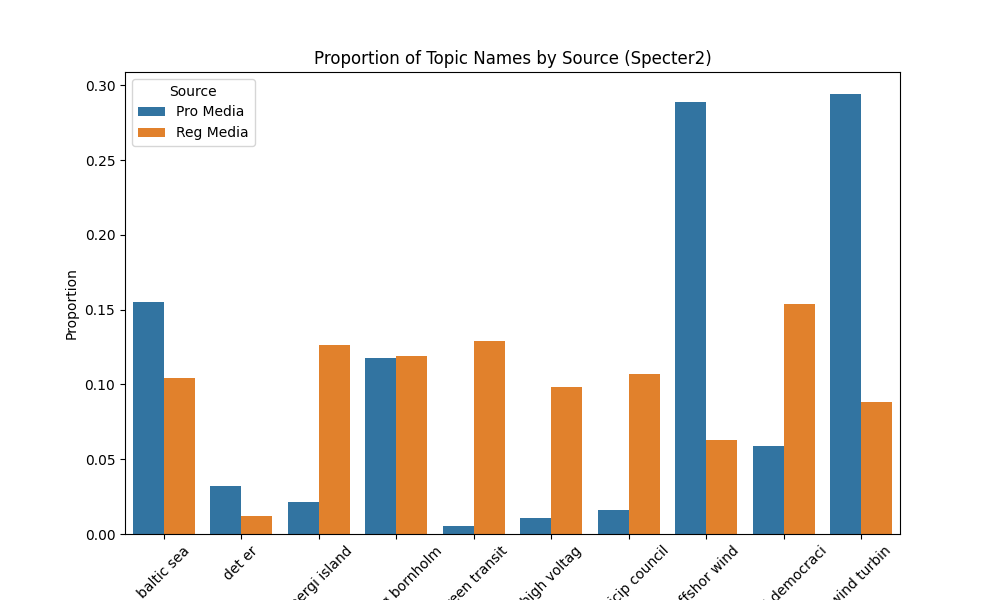
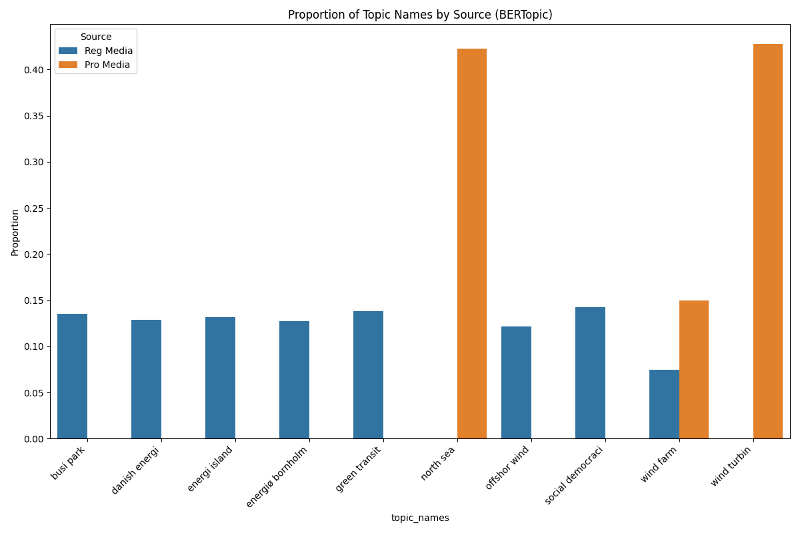

Welcome to the homepage for our bachelor project! It is created in order to have a better medium to communicate the development of the project as well as the results generated in the processs. Every time our GIT repo is updated, this page will be updated as well with the latest visualizations and other things that we choose to show.
Project Description: (written by ChatGPT)
This project investigates the discourse surrounding Denmark’s energy islands initiative by analyzing how the topic is discussed across scientific literature, professional media, and regional media. Using Natural Language Processing (NLP) techniques, particularly topic modeling methods such as BERTopic and Latent Dirichlet Allocation (LDA), the study aims to identify key themes, trends, and differences in how energy islands are framed in different contexts. The project contributes to the European Research Center (ERC) project Goodbye Devising, which seeks to integrate local citizen values and environmental concerns into the early stages of green energy planning. By applying NLP-based text analysis, this research provides insights for policymakers, scientists, and communicators to bridge the gap between expert knowledge and public understanding of Denmark’s energy transition.
Initially some preprocessing is done to the data to prepare it for the Language models to calculate the embeddings. The preprocessing consists of Translation, Stop word removal and Stemming.
Then the various models (XLM-Roberta, Specter 2, MiniLM12), are calculating their document embeddings, placing each document (1429 documents) in a 383 dimensional vector space.
Based on these embeddings k-means clustering is conducted to find clusters of documents, which are close to each other in the vector space, reflecting a similar semantic representation.
For each cluster Latent Dirichlet Allocation (LDA) is used to come up with a topic for the cluster based on the bag of words which is an output of LDA. This is visualized in 2D in the Data map plot pane.
After this clustering it is interesting to investigate what the source is for the documents in each cluster. Therefore a simple grouped bar plot is created to show where the documents in each cluster originate - meaning which source it comes from.
We have tested different models for topic modelling. As statistical models we have LDA and NMF, which are harder to visualize, since they output bag of words for a number of topics.
Other than the statistical methods we are also investigating various Language models which can be used for topic modelling as well. They run differently since they embed each document in a multidimensional space
this makes it possible to cluster the documents and visualize them in a 2D plot. Below you can see the different models we have tested and the resulting plots.
When clicking the button please let it run for a couple of seconds
The plots shown are quite large. Also you have to "deselect" a model after viewing it before going to the next one
First we show the 2D visualization of the document embeddings originally being a 383 dimensional vectorspace.
In the plot above different clusters are shown, and a LDA model is currently used to give each cluster a name. We are though interested in investigating which source the documents in each cluster come from
and therefore we have made a source plot below. This plot shows the same clusters as the datamap plot, but with the source of the documents in each cluster.

First we show the 2D visualization of the document embeddings originally being a 383 dimensional vectorspace.
In the plot above different clusters are shown, and a LDA model is currently used to give each cluster a name. We are though interested in investigating which source the documents in each cluster come from
and therefore we have made a source plot below. This plot shows the same clusters as the datamap plot, but with the source of the documents in each cluster.

First we show the 2D visualization of the document embeddings originally being a 383 dimensional vectorspace.
In the plot above different clusters are shown, and a LDA model is currently used to give each cluster a name. We are though interested in investigating which source the documents in each cluster come from
and therefore we have made a source plot below. This plot shows the same clusters as the datamap plot, but with the source of the documents in each cluster.

First we show the 2D visualization of the document embeddings originally being a 383 dimensional vectorspace.
In the plot above different clusters are shown, and a LDA model is currently used to give each cluster a name. We are though interested in investigating which source the documents in each cluster come from
and therefore we have made a source plot below. This plot shows the same clusters as the datamap plot, but with the source of the documents in each cluster.

Below you can see a comparison of the different models we have tested. The comparison is made by looking at the source of the documents in each cluster. The source is shown in the legend, and the different models are shown in different colors.
The comparison is made to see if the different models are able to cluster the documents in a similar way, and if the source of the documents in each cluster is similar.
About
We are three friends from DTU collaborating together on this bachelor supervised by Anders Kristian Munk